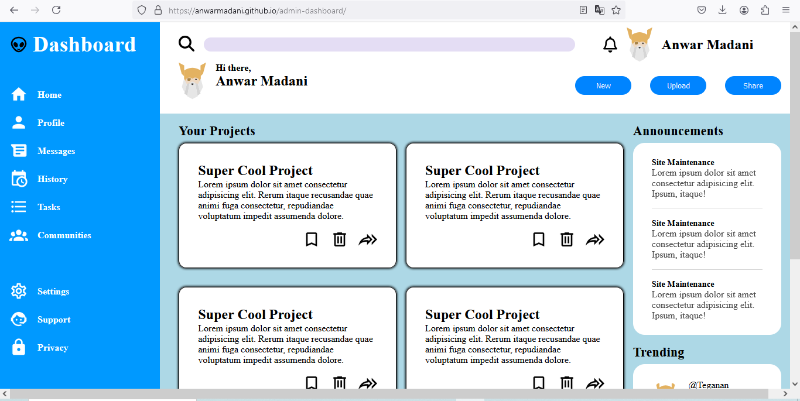

My work


Hi, I’m a passionate web developer with a background in JavaScript, HTML, CSS, and a keen interest in creating intuitive and engaging user interfaces. I have hands-on experience with popular frameworks and libraries like React and Node.js, which I’ve used to develop projects. My skill set includes not only front-end development but also a growing understanding of backend technologies, allowing me to bridge the gap between design and functionality. Currently pursuing my studies in Computer Science, I’m always looking to expand my knowledge and improve my skills.